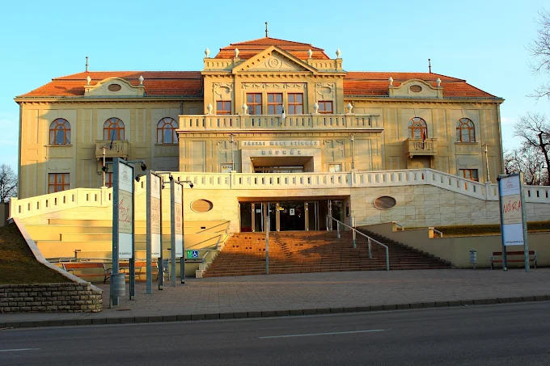

Üdvözlünk a Jászai Mari Színház weboldalán!
A tatabányai Jászai Mari Színház a város egyik legfontosabb kulturális intézménye. Színes előadásaival minden korosztály számára kínál szórakozást.
A színház repertoárjában megtalálhatók vígjátékok, drámák és családi előadások is. Célja, hogy a közönség számára minőségi színházi élményt nyújtson.